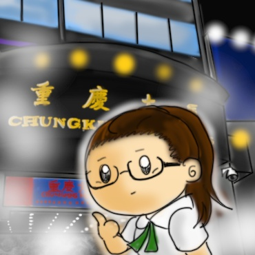
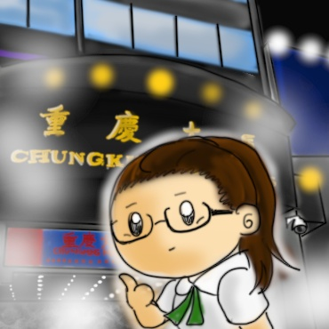
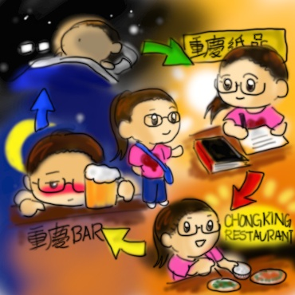

關於重慶大廈
重慶大廈坐落在香港的主要旅遊區尖沙咀，位於遊客聚集的彌敦道36至44號，毗鄰高檔的半島酒店和假日酒店，屬於九龍半島頂尖處。大廈周邊的交通方便，四周都是港鐵的入口，每五分鐘就有一班列車接載旅客前往羅湖過境，有利商人到內地的商城和工廠進行貿易；若由大廈步行約十分鐘，就可到達客運碼頭，乘渡海小輪橫過維港，前往中環、灣仔一帶。由此可見，重慶大廈於處香港的中心地帶。
這幢看似平平無奇的大廈，是香港人眼中的一個神秘世界，是發展中國家人們眼中的安樂窩，亦是叫外地旅客為之卻步的「黑暗中心」，卻也是本港「低端全球化」的代表。
 

一般人對重慶大廈總是持避之則吉的態度，縱使對其的認識不深，甚至毫無認識，但路經時也得快步離開，怕會沾上甚麼麻煩。要是你希望更深入認識這個神秘的地方，最好的方法當然是親自到那裏走一趟，以第一身的感官見識、體驗這個叫旁人望而生畏的「森林」，看看不同國籍、不同種族的人如何在這個狹小的地方工作、貿易、生活，才能有最真切的體會。
這本書分為五大部分，若你對閱讀的興趣不大，不妨在目錄中挑選自己感興趣的題目，進行深入的研讀，待讀畢一個部分才決定是否繼續閱讀。相反，若你對閱讀深感興趣，強烈鼓勵你讀畢整本書，認識這個神秘的國度。
人群
重慶大廈猶如一個小型聯合國，或許可在裏面遇上超過一百三十多個國籍的人︰有南亞男子在兜售訂購西裝的服務、有印度性工作者穿着燦爛奪目的傳統服飾招攬顧客、也有來自東南亞的冒牌手錶商販、亦有尼日利亞商人來港提取二手手機回國出售……他們大多離鄉別井，以商人、臨時工、性工作者，甚至是避難者的身份，前來香港尋求最好的出路，養活家鄉的家人。
不同的人擁有不同的身份，背後亦有不一樣的故事，但在重慶大廈裏，不同的種族、不同的人群卻有着同步的互動。種族之間的交流都十分實際。或許在小食攤內有五個不同國籍的人坐在一起，縱使他們不一定認識對方，但有時候他們會開始交談，然後會變成朋友，也有可能會爆發出激烈的辯論。「重慶大廈有一種令人讚嘆的祥和氣氛」作者如是說——的確，那裏雖不是一個烏托邦，仍然存在不少不公平的現象，例如典型的貧富差距和階級衝突，但他們都相信，在這幢大廈內，不同種族的人群理應有着一樣的待遇——就連「被剝削的人不尋求反抗，而是向剝削者看齊」。


重慶大廈裏究竟有些甚麼種族的商人？
你在重慶大廈中不易發現黃種人的存在，可是幾乎全球大部分的種族的人都可以遇見得到，來港的商人的國籍有很多，例如阿根廷人、津巴布韋人、不丹人、伊拉克人、牙買加人、盧森堡人、馬達加斯加人，甚至連馬爾代夫人也有呢！
商品
重慶大廈中最常見的商品，莫過於手機、手錶及電子產品，其中尤以手機批發和貿易為主。可是在店舖裏，出售的手機也有上千種︰冒牌的、二手的、十四天手機、仿製品……總之在世界上能找到的手機種類在重慶大廈都有出售。當然，重慶大廈也有極少數的店舖批發正牌貴價手機，只是它們的生意都不大好，其他形形色色的平價手機在是大廈裏的主流。
雖然商人們來自不同的國家，有自己的一套營商技巧，但重慶大廈裏的店主都有一個共通點——他們都懂得在極低的售價下賺取一定的盈利。以作者親身訪問的一間手機店為例，他們會把極低廉且質素較差的「重組手機」摻雜在「十四天手機」中一同出售，以收混水摸魚之效，藉故多賺取十元八塊的意外之財；他們又會向對手機認識匱乏的商人下手，故意抬高他們心儀的手機的售價，以便多收取約百分之三十至五十的錢。或許他們的行為可鄙且不值得原諒，可是他們終究是可憐的，他們背後的辛酸實在不足以為外人道，以這樣的手法進行貿易也是迫不得已之計。他們大多來自發展中國家，有的甚至對批發貿易和手機生意一竅不通，只得每天冒着被欺騙的風險學習，有的更要擔心店鋪的客流量、擔心店內的臨時工被海關人員拘捕、也要擔心店舖因生意問題損失大額的盈利……在這因素下，他們的技倆也不過是權宜之計，助他們早日獲利，給遠在他方的家人更好的生活，他們的行為真的還算是可恥的嗎？


為甚麼大廈裏的商人批發回國的商品大多都是電話等的智能產品？
這批商人主要來自發展中國家，國內的科技水平較低，甚至未有他們批發回國的手機售賣。因此，商人大量批發這些智能產品回國，定可吸引顧客，並從中抬高售價，獲得更多的盈利。
法律
重慶大廈中有兩個主要的權力層面，乃大廈保安和警察。大廈的保安大多在大廈裏駐守、巡邏或維持秩序，有些則守在保安室內，透過閉路電視監察整幢大廈的的治安。然而，能夠在大廈裏直接施法的當然是警察，而警察這一角色在重慶大廈也受到大部分人的尊重——或許這實在叫人感到驚訝，但作者認為主要還是歸功於香港警察的專業操守。
雖然重慶大廈的商人會為了賺錢而不擇手段，老闆亦會為了降低成本而聘請逾期居留者，但他們都會懂得利用法律的灰色地帶保護自己。重慶大廈裏的警察亦然，縱然他們有些會捉拿非法勞工及逾期居留人士，有的專門處理大廈裏的罪案，有的則負責逮捕癮君子和出售毒品的商人，可是他們總是會對較輕微或較不顯眼的情況「睜一眼，閉一眼」。他們並非不盡責，我想，也許是因為他們無法掌握有力的證據，亦也許是他們對大廈人群的一點好處——畢竟重慶大廈裏發生的罪案其實算不上多，普遍的也不過是一些小爭執和打架而已。當然，在大廈從事非法行為的人一旦被逮捕，同樣要面對法律的制裁，但這些都不常見。無他，只因駐守重慶大廈的警察奉行新自由主義︰只要香港的市民大眾不受到傷害，他們就不會侵擾大廈裏的活動——正正因為這種正面的態度，重慶大廈才能夠在香港屹立不倒。


為甚麼重慶大廈有這麼多黑種人?
那兒的商人大多來自非洲和南美，在大廈內有許多可供他們進行批發貿易的店舖，如電話、服飾等等，他們可在那裏集中採購所需的貨品，再寄送回國。另一方面，因為他們的資金少得可憐，而大廈高層有不少廉價的旅館，價錢較一般的酒店便宜，方便他們在大廈進行商業活動時作短暫逗留。
未來
重慶大廈究竟有怎樣的未來？如果中國政府繼續放寬對非洲人的入境限制，或許更多的非洲商人會選擇前往內地進行貿易，而非重慶大廈，那麼大廈底層的大量店舖將會面臨結業的危機。另一方面，若大廈的業主立案法團決定為重慶大廈進行大維修，重振聲威，店舖的租金也必然會上漲。在這情況下，無法負擔高昂租金的非洲商人及南亞店主將被迫遷，嚴重影響他們的生計。
的確，大廈內不少業主對重慶大廈終會被拆卸持觀望的態度。他們都認為，如果能在這黃金地段興建大酒店、商場等的大型發展項目，其收益一定會比大廈現時的收益可觀——更重要的，他們大多都會因大廈拆卸而獲得一定數目的賠償。然而，大部分學者都一致認為，儘管大廈歷盡風霜，早已殘破不堪，但它卻產生了巨大的效益，因為總會有源源不絕滿袋金錢的商人前來投資，所以重慶大廈未來應該繼續生存，至少暫時也該如此。
在廣泛意義上來說，重慶大廈是會留下的。作者有言︰「低端全球化不是世界的過去，它至少是在某些方面是世界的未來。重慶大廈在其特定環境下將必然消失，但在更深層意義來看，世界中心的貧民窟也許不久成為整個世界。」


重慶大廈到底是何時出現的呢？
重慶大廈前身是一座市場型建築，稱為「重慶市場」，於香港日治時期曾改名為「中興市場」。在1959年，該址動工重建為一幢商住大樓，並於1961年11月11日落成，由此名為「重慶大廈」。
地點
重慶大廈位於尖沙咀彌敦道的黃金地段，是一幢樓高十七層的大廈，外表殘舊，跟周邊旅遊旺區明顯格格不入，卻可謂是世界上「最為全球化」的大樓。可是重慶大廈更是一個令不少香港人卻步的地方，大多人都認為那裏充滿危險，有色狼流氓，或會迷路和被人綁架，甚至連其他國家對重慶大廈的評價亦然，它有如香港的一顆「黑色的心臟」。
大廈旁邊是各式各樣的商鋪，有時裝店、電器店、餐館、酒吧等等，與一般的街道無異；然而，這幢大廈內，卻是一個與別不同的世界——大廈低層有十百四十多家叫人眼花撩亂的店舖︰有售賣電話卡的店舖，提供廉價電話卡、有不同國家的地道菜餐館、也有販賣西方及非洲風格服飾的服裝店、亦有批發偽冒手錶及電子產品的店舖，甚至連出售色情刊物和平價機票的小攤檔也有……有人說︰「重慶大廈有一套自給自足的生態系統。」亦因為這套系統，不同種族的人在大廈裏安然無恙地一起生活着，找尋自己追求的，卻很少發生衝突、歧視。就在這樣一幢毫不起眼的大廈中，竟然無疑地綻放出無窮的經濟力及勞動資源。
